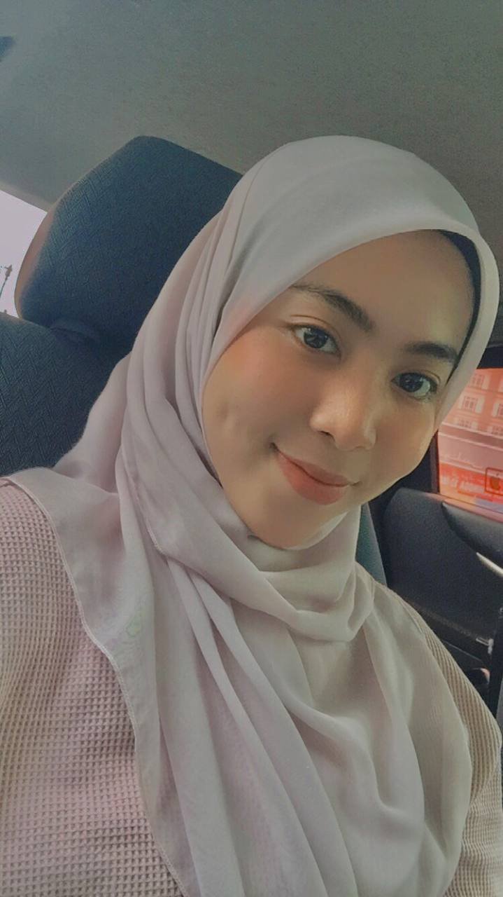

My name is Wan Nurmaisarah binti Wan Ruzaiman. You can call me Sarah. I am 20 years old. I am the second of six children. I live in Kota Bharu, Kelantan. My date of birth is May 30, 2001. My hobby is watching K-Dramas. I love to watch dramas during my free time. I can say that I am a responsible and hard-working student. Moreover, I am not a sociable person. I don't have many friends since I am kind of an introverted person when it comes to starting a conversation with people. As I grow, I am scared to meet new people. That is why I keep my circle small. I do enjoy my time at home right now. Because of pandemic COVID-19, I have a lot of hobbies to which I am currently addicted, which are jogging, workouts, painting, cooking, and so on. When it is the first year of COVID-19, I gain 3 kg from my previous weight. But now I'm back! Hehe, I lost 5 kg with my hardworking exercise and diet😍
Visit my instagram page 😀
Click this to go to the next page